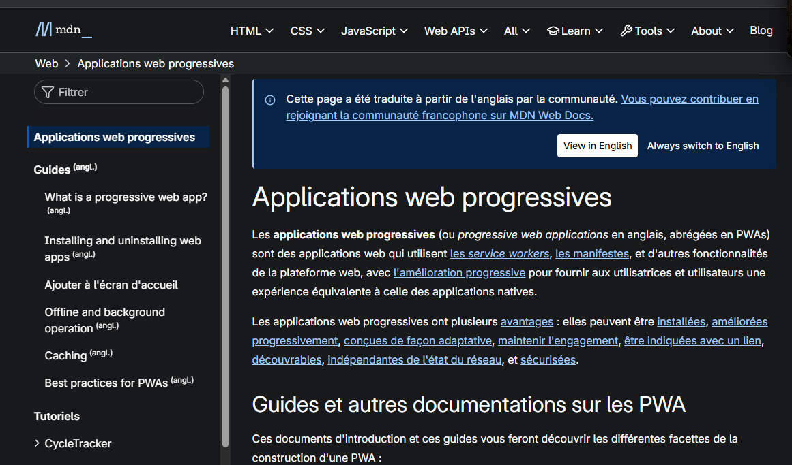
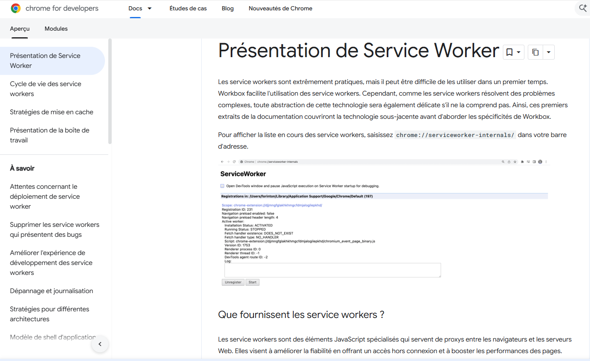
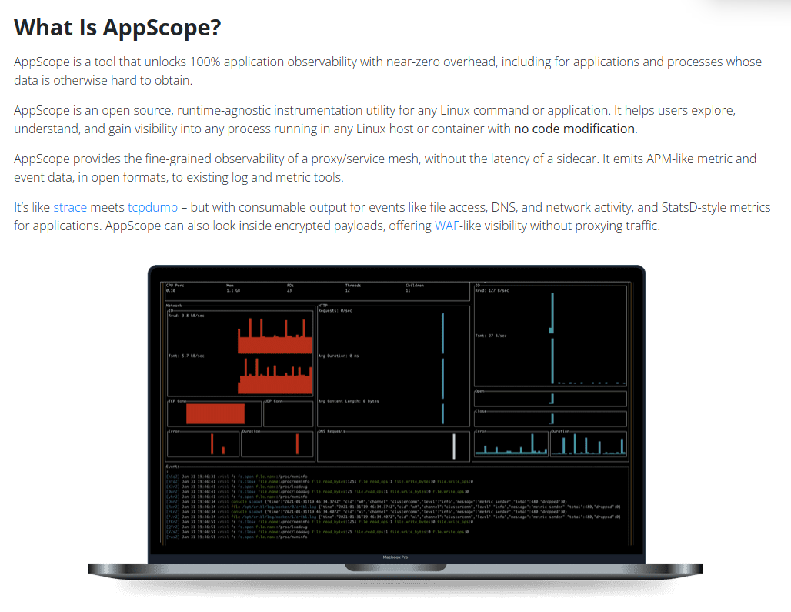

Analyse logicielle et IA, adaptée aux sujets BTS SIO, avec une attention portée aux services et aux usages.
Veille BTS SIO : Progressive Web Apps (PWA)
Sujet de veille technologique : les Progressive Web Apps. Ce sont des sites web qui se comportent comme des applications mobiles installables, rapides et disponibles hors ligne.
1. Qu’est-ce qu’une PWA ?
Une Progressive Web App est une application web moderne qui peut être installée sur un appareil, fonctionner hors ligne, envoyer des notifications et offrir une expérience fluide proche d’une application native.
En BTS SIO, ce sujet est pertinent car il relie le développement web, l’architecture client/serveur, l’expérience utilisateur et les services accessibles depuis n’importe quel terminal.
Installation sur mobile et bureau sans magasin d’applications.
Mode hors ligne grâce aux service workers.
Performance améliorée via le cache et la mise en réseau intelligente.
Service Worker : programme qui s’exécute en arrière-plan dans le navigateur. Il gère le cache des fichiers, permet au site de répondre encore même sans connexion et rend l’expérience plus rapide.
Manifest Web App : fichier JSON qui décrit le nom de l’application, les icônes et les préférences d’affichage. Il donne au navigateur les informations nécessaires pour proposer l’installation comme une application sur l’écran d’accueil.
HTTPS : une PWA doit être servie en HTTPS pour garantir la sécurité des données. C’est aussi la condition pour activer les fonctions avancées comme le service worker et les notifications push.
Performance : une bonne PWA doit charger vite et rester fluide à l’utilisation. Cela demande d’optimiser le cache, de réduire le temps de chargement et d’adapter l’interface aux mobiles comme aux ordinateurs.
3. Pourquoi j’ai choisi ce sujet
Pour mon dossier de veille, j’ai choisi les PWA car elles montrent bien le croisement entre développement web, utilisation mobile et services professionnels.
4. Les sources et captures d’écran que j’ai retenues
J’ai documenté mon travail avec des captures d’écran des pages qui expliquent le service worker, le manifeste web app et des exemples de PWA déjà en production.

Documentation Google sur les PWA

Explication des principes de PWA

Exemples de PWA réelles
Ces captures d’écran illustrent les documents et pages que j’ai consultés pour comprendre comment construire une PWA et pourquoi elle est utile.
Ces sources m’ont aidé à structurer ma réflexion et à expliquer les aspects techniques et pratiques des Progressive Web Apps.
6. Synthèse pour le dossier de veille
Ma veille montre que les Progressive Web Apps sont une solution intéressante pour un projet BTS SIO. Elles permettent de proposer une application web installable, rapide et sûre, tout en évitant de développer séparément une application native pour chaque plateforme.
J’ai retenu trois points principaux : le service worker pour gérer le cache et le mode hors ligne, le fichier manifest pour installer l’application, et l’obligation du HTTPS pour garantir la sécurité. Les exemples vus sur MDN, Chrome Dev, Web.dev et Appscope permettent de comprendre ces concepts dans un contexte réel.
En conclusion, une PWA est utile dans un projet web professionnel car elle améliore l’expérience utilisateur sur mobile comme sur ordinateur, réduit les temps de chargement et facilite l’accès aux services même sans connexion stable.